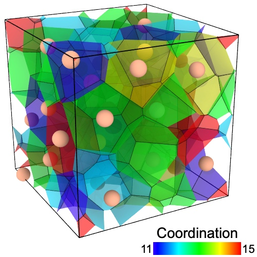
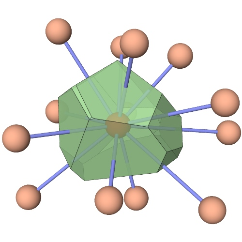
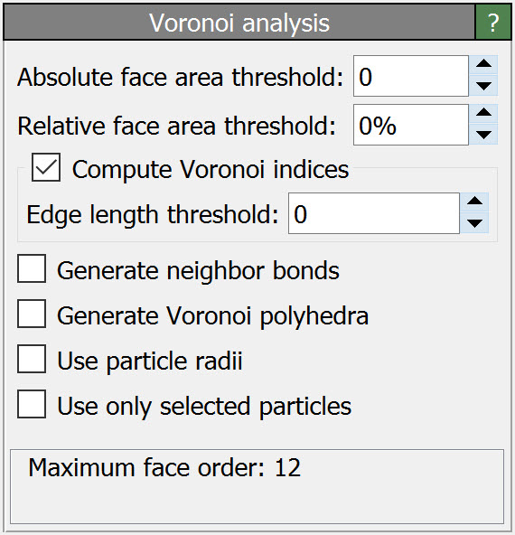
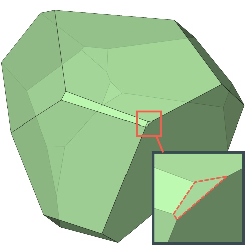
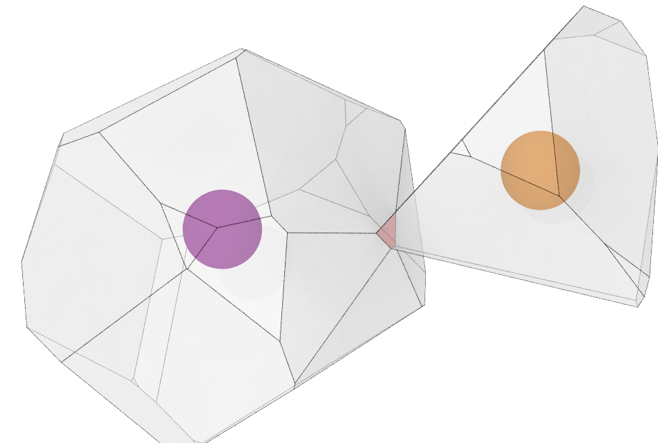

Voronoi analysis
  {kind=link}
{kind=link}
{kind=link}
This analysis modifier calculates the 3D Voronoi tessellation of the simulation box, taking the particle positions as Voronoi cell centers. By default the following output quantities are computed for each input particle:
- Atomic Volume
The volume of the Voronoi cell of the particle (in cubic simulation units of length).
- Coordination
The number of faces of the Voronoi cell. Since there is one Voronoi face per nearest neighbors of a particle, this quantity is typically called the coordination number.
- Cavity Radius
The distance from the particle to the farthest vertex of its Voronoi cell. This distance is also the radius of the biggest empty sphere (i.e. containing no other particle) touching the particle. It can thus be used to quantify the size of the cavities near the particles, by assuming that particles are points with no size. For this reason the quantity is called cavity radius.
After the modifier has been executed these quantities become available as new particle properties and may be referenced in subsequent pipeline steps. Use for example the Color coding modifier to visualize the values of these particle properties.
Voronoi indices
In addition to the basic quantities listed above, the modifier can compute the index of each Voronoi cell, which is a vector of integers constituting a histogram of the number of edges on the faces of the Voronoi cell. This index vector can be considered a characteristic signature of a particle’s coordination structure and the topology of the Voronoi polyhedron. For instance, an icosahedral coordination structure corresponds to the Voronoi index vector (0,0,0,0,12,0,…). In other words, this index vector denotes a polyhedron with exactly 12 faces with 5 edges each. To select all atoms having this kind of icosahedral coordination structure, we can use the Expression selection modifier with the Boolean expression:
VoronoiIndex.3==0 && VoronoiIndex.4==0 && VoronoiIndex.5==12 && VoronoiIndex.6==0
Note that we don’t need to include the first two indices in the selection expression, since faces with less than three edges do not exist.
Due to limitation in OVITO’s data model, which can only store per-particle Voronoi index vectors of uniform length, the vectors are truncated at a certain maximum face order, which is given by the parameter Maximum edge count. Faces with more edges will be ignored and don’t show up in the truncated index vector. OVITO warns if it encounters any such higher order faces and will recommend to increase the vector length to avoid truncation.
How to analyze the computation results
If you are interested in the indices computed by the modifier for a particular particle, you can open OVITO’s Data Inspector panel. It lists all properties of the particle, including the computed Voronoi indices. If you would like to perform a statistical analysis of the Voronoi polyhedra, e.g. to determine the Voronoi index vector that occurs most frequently in your system, then you can use OVITO’s Python scripting interface to access the computed per-particle indices. You can find an example script in the OVITO Python Reference.
Face area and edge length thresholds
{kind=link}
Voronoi polyhedra are known to be unstable with regard to small perturbations of the particle positions in many cases. To address this issue, at least partially, the modifier provides threshold parameters for the area of Voronoi faces and the length of face edges to filter out very small, almost degenerate faces and edges.
If an edge of a Voronoi face is shorter than the specified edge length threshold, then this edge is not counted toward the order of the Voronoi face. Furthermore, if the face’s area is below the area threshold, then the face is not included in the computed Voronoi index and it also not counted toward the coordination number of the central particle. The threshold face area can either be specified as an absolute value or relative to the total surface area of the Voronoi polyhedron. The purpose of these thresholds is to exclude very small faces/edges, which occur sporadically in the presence of perturbations, from the analysis and the counting. Also see this paper on the topic.
Parameters
- Absolute face area threshold
Specifies a minimum area for the individual faces of a Voronoi cell. The modifier will ignore any Voronoi cell face whose area is smaller than this threshold area when computing the coordination number and the Voronoi index of a particle. The threshold is an absolute value in units of length squared (in whatever units of length your input data is given).
- Relative face area threshold
Specifies a minimum area for the individual faces of a Voronoi cell in terms of a fraction of the total surface area of a Voronoi polyhedron. The modifier will ignore any Voronoi cell face whose area is smaller than this threshold when computing the coordination number and the Voronoi index of a particle. The relative threshold is specified as a fraction of the total surface area of the Voronoi polyhedron the faces belong to. For example, you can use this threshold to exclude those faces from the analysis with an area less than 1% of the total area of the polyhedron surface, like it was done in this paper.
Caution
Using the relative threshold option may lead to an asymmetric counting of shared faces: Consider two adjacent Voronoi cells sharing the same face. The relative area of this face, as seen from the first cell, is different from the relative area of the same face, as seen from the second cell, if that second cell has a different total surface area. Thus, the shared face may be counted toward the coordination number of the first cell, but not toward the coordination number of the second cell.
- Compute Voronoi indices
Activates the calculation of Voronoi indices. The modifier stores the computed indices in a vector particle property named
Voronoi Index. The i-th component of this vector will contain the number of faces of the Voronoi cell having i edges. This implies that the leading two components of the per-particle vector are always zero, because the minimum number of edges a polygon can have is three.- Maximum edge count
Controls the order up to which Voronoi indices are computed. Note that Voronoi faces with a more edges than this maximum will be ignored when calculating the index vector.
- Edge length threshold
Specifies the minimum length a face edge must have to be considered in the Voronoi index calculation. Edges that are shorter than this threshold will be ignored when counting the number of edges of a Voronoi face. The threshold value is given in absolute units of length (depending on your input data).
- Generate neighbor bonds
If this option is enabled, the modifier generates bonds between neighboring particles that share a Voronoi face. A bond is generated for every Voronoi face whose area is larger than the face area threshold and which has at least three edges longer than the edge length threshold.
- Generate Voronoi polyhedra
Lets the modifier output a surface mesh to visualize the computed Voronoi polyhedra. Each Voronoi cell is represented by a spatial region in the mesh and is associated with local properties such as the cell’s volume, coordination number, surface area and the unique ID of the input particle located at the center of the cell. Use additional modifiers such as Expression selection and Delete selected to subsequently filter the set of displayed Voronoi cells. For example, to visualize only cells having a certain number of faces or belonging to certain atoms.
Additionally, the modifier outputs each face’s area, order, and adjacent cell info as per-face mesh properties, which can be used to further analyze the characteristics of individual Voronoi faces in the system. Note that tools such as the Histogram modifier allow you to subsequently compute global statistics, e.g. the distribution of Voronoi face areas.
- Use particle radii
Lets the modifier compute the poly-disperse Voronoi tessellation, which takes into account the radii of particles. Otherwise a mono-disperse Voronoi tessellation is computed, which is independent of the particle sizes.
- Use only selected particles
Restricts the analysis to the subset of currently selected particles. Particles that are not selected will be treated as if they did not exist.
{kind=link}
Potential issues at non-periodic simulation box boundaries
The algorithm calculates the Voronoi tessellation of the finite volume enclosed by the simulation cell (not infinite space!). Thus, Voronoi cells get truncated at the simulation box boundaries (unless periodic boundary conditions are active). Accordingly, no computation will be performed for particles located outside the finite simulation box (but they still affect the Voronoi cells of particles inside the box).
Particles located exactly on the simulation box boundaries (in a non-periodic direction) pose a problem. The Voronoi cell of such particles is singular and the construction algorithm may stop with the error message “Could not compute Voronoi cell for some particles”. The solution to this type of problem is to slightly enlarge the simulation box to fully include all particles. This can be done, for example, by using the Affine transformation modifier to scale the box size by a factor greater than 1.
See also
ovito.modifiers.VoronoiAnalysisModifier (Python API)
New in version 3.8.5: Calculation of the Area and Voronoi Order per-face mesh properties
New in version 3.7.9: Calculation of the Cavity Radius property (thanks to Alain Dequidt)